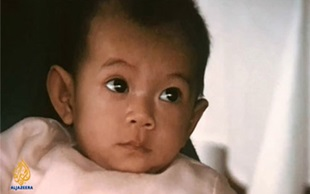

Hành trình tìm mẹ của nhà báo gốc Việt sau cuộc không vận trẻ em
Giây phút này trả lời câu hỏi lớn nhất đời tôi, và đặt ra hàng nghìn câu hỏi mới "Tumer, một em bé trong chiến dịch không vận Babylift, nay
Giây phút này trả lời câu hỏi lớn nhất đời tôi, và đặt ra hàng nghìn câu hỏi mới "Tumer, một em bé trong chiến dịch không vận Babylift, nay